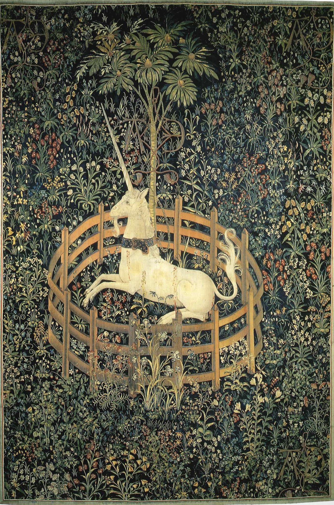

作品名 「捕らわれた一角獣」
花言葉 「愚かしさ」「円熟した優雅さ」「結合」
ザクロ
「愚かしさ」
ザクロは多数の種子をもつことから古来より、子孫繁栄や豊穣のシンボルとされてきました。ザクロの実の花言葉「愚かしさ」は、うっかりザクロを食べてしまったギリシア神話が由来です。また、「円熟した優雅さ」は、ザクロの実が、熟した果実のように見えるので、付けられた花言葉だといわれています。
捕らわれた一角獣
不明
この作品は、ルイ12世とアンヌ・ド・ブルターニュの結婚を祝って作られた「一角獣狩り」の連作のうちの一つ。花々に囲まれ、ザクロの木の下に傷を負いながら穏やかに休む一角獣は、復活のキリスト教を象徴していると考えられている。
| 作品名 | 捕らわれた一角獣 |
| 作者 | 不明 |
| 制作年 | 1499年頃 |
| 種類 | 絹・羊毛 銀・銀糸 |
| 寸法 | 368 × 251cm |
| 所蔵 | メトロポリタン美術館 |